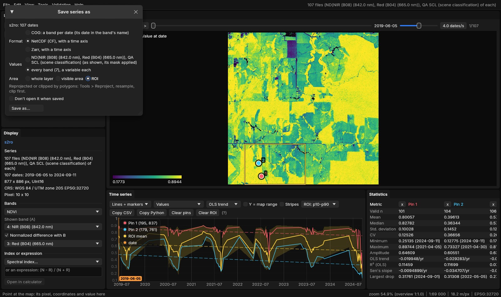

01The idea
Janus opens a folder of files as a series, one file a date, the date read from each name. These tools deal with what comes before and after that: files that are not yet one a date, dates that are not evenly spaced, and a series that has to leave Janus for another program.
- Build series
- File → Build series...: loose files grouped by the date in their names, a date's bands stacked and its tiles mosaicked on one grid; a VRT or a COG per date.
- Regularize series
- Tools → Regularize series...: one composite per period of a fixed step (8 or 16 days, a month, a year, any number of days), the empty periods filled or left empty; a COG per regular date.
- Save series as
- File → Save series as...: the active series as a multiband COG, a NetCDF or a Zarr with a time axis, over the whole layer, the visible area or the ROI.
- Speckle filter
- Tools → Speckle filter...: a radar series smoothed by Quegan's multitemporal filter or by Lee's; a COG per date.
Each runs as a task in Tools → Tasks, writes a folder under %LOCALAPPDATA%\Janus\results with its log and its provenance.json, and opens what it made as a new layer.
02The data
The series of the STAC guide: Planetary Computer's Sentinel-2 L2A over a square of central Rondônia, Brazil, 8.8 km a side, the 107 dates from June 2019 to September 2024 whose scenes had 5% of clouds at most, downloaded as GeoTIFFs (blue, green, red, NIR, the two SWIR and the scene classification, SCL), 877 × 886 cells of 10 m. It opens on the NDVI with the clouds masked by SCL.
Two pins follow the guide, those of the STAC guide: pin 1 (195, 837) in a forest in the south-west, its NDVI 0.80 on average over its 101 clear dates and lowest, 0.25, on the last date, 2024-09-11; pin 2 (179, 761) in a pasture, 0.40 on average and down every dry season, 0.13 at its lowest on the same date.
For section 03, 36 loose files were cut from six dates of that series, as a download would give them (section 03 says how). For section 07, the STAC guide's Sentinel-1 year: 24 dates of 2024 over the same square, VV and VH as linear gamma0, kept as one GeoTIFF a date.
03Build a series from loose files
A Sentinel-2 product comes as one file per band, its 10 m bands apart from its 20 m ones, and an area often needs two tiles. The loose files here: six dates of the 2024 dry season, two tiles (T20LMP, the west 5.2 km of the square, and T20LNP, the east 5.2 km, overlapping by 1.6 km), and three bands named as in an L2A product: red and NIR at 10 m, the scene classification at 20 m:
T20LMP_20240608T142721_B04_10m.tif
T20LMP_20240608T142721_B08_10m.tif
T20LMP_20240608T142721_SCL_20m.tif
T20LNP_20240608T142721_B04_10m.tif
... the same for 2024-06-28, 07-18, 08-02, 08-27 and 09-06File → Build series..., then Pick a folder... (or Pick files...). Janus reads every file's name and georeference and shows a plan before it writes anything:
![The Build series window over Janus: the line Loose files grouped by the date in their names, the buttons Pick files... and Pick a folder...; the plan: 6 dates, 3 band(s) a date, up to 2 tiles mosaicked: 877 x 886 px of 10 m; Bands: B04, B08, SCL (a file each); a row per date from 2024-06-08 to 2024-09-06, each listing T20LMP_..._B04_10m.tif (+1 tiles), T20LMP_..._B08_10m.tif (+1 tiles) and T20LMP_..._SCL_20m.tif (+1 tiles); As: VRTs (at once, nothing copied) ticked, or COGs; Name: loose; Build. Behind it the Sentinel-2 series as NDVI with its two pins and their chart.](assets/img/series/01-build.jpg)
- Dates
- From each name, as when a folder is opened (
YYYYMMDD,YYYY-MM-DD,YYYY_MM, a year, MODIS'sA2001001...). A file without one is left out. - Bands and tiles
- The rest of a name, without its runs of six digits or more (the date, the time
142721), tells files apart. Within a date, files of the same extent are one tile, and that tile's files, in natural order, are the bands; files of another extent are other tiles of the same bands, mosaicked. Files of several bands each keep their bands, their tiles mosaicked. - Band names
- What the names do not share, cut at a separator:
B04_10m,B08_10m,SCL_20m; then a resolution suffix (_10m,_20m) is dropped when the names stay distinct without it:B04,B08,SCL. Sentinel-2's band names (B04,B08...) get their wavelengths, so the indices find red and NIR. Files of one band a date keep what their names share (lc_2000.tif,lc_2001.tif:lc). - Checks
- Every file needs a georeference, an unrotated grid and the first file's CRS (a file in another is left out, with the advice to reproject it first). A date whose tiles do not have the same number of files is left out, and so are dates of another kind than most (another number of bands). What is left out is listed under the dates, with why.
- Grid
- The union of the files' extents at the finest cell: the 20 m scene classification is read on the 10 m grid.
As chooses what is written in results\series\<name>_<time>:
- VRTs
- One per date,
loose_20240608.vrt..., made with GDAL's owngdalbuildvrtcode: a mosaic per band on the grid (-te,-tr), then the bands put together (-separate) with their names. Nothing is copied; the six took 0.1 s. - COGs
- The same dates read once into cloud-optimized GeoTIFFs, for a series that no longer depends on the loose files.
![The built series opened as a layer: loose, 6 dates from 2024-06-08 to 2024-09-06, 877 x 886 px, UInt16, UTM zone 20S; opened as NDVI with SCL as its quality band (6 files (ND(B08 (832.8 nm), B04 (664.6 nm)), QA SCL of each)), the Display panel's Bands on NDVI, B08 (832.8 nm) normalized with B04 (664.6 nm); the map of 2024-09-06 from 0.17 to 0.88, the dry pastures dark, the forest blue-green, no seam between the two tiles; the chart of the six dates: pin 1 in red from 0.84 on 2024-06-08 down to 0.50 on 2024-09-06, pin 2 in blue from 0.43 down to about 0.21.](assets/img/series/02-built.jpg)
Bands named by their files
The bands take their names from the files. Here they are Sentinel-2's own, B04 and B08, which Janus knows with their wavelengths (664.6 and 832.8 nm), so the built series opened on the NDVI with the SCL as its quality band, like the downloaded one. Bands whose names Janus does not know (no wavelength, no word such as red or nir) open on the first band: an expression reads them by name, (B08 - B04) / (B08 + B04) in the Display panel (or --expr), and the Quality band list takes the cloud mask.
04Regularize: one date every 16 days
The 107 dates of the Sentinel-2 series are where the sky was clear: a dozen or more in each dry season, few from October to May. Many tools want a fixed step: BFAST and BEAST read the season from it, the phenology fits a curve per year, a neural network wants the same number of dates everywhere. Tools → Regularize series... cuts the time into periods and gives each one value:
![The Regularize series window over the Sentinel-2 series: s2ro: 107 dates, 2019-06-05 to 2024-09-11; Step 16 days; A period gives Median; Bands: as shown (ND(NIR (B08), Red (B04)), QA SCL) ticked, or all 7; Empty periods Whittaker with lambda 10.0; Longest gap 0 days; Area the whole layer (the ROI greyed); Name s2ro regular; the line 121 periods of 16 days, 66 without a date: one COG each, in a folder that opens as a series; Run. Behind it the NDVI map with pins 1 and 2 in the south-west and the chart of their five years.](assets/img/series/03-regularize.jpg)
- Step
- 8 days, 16 days, monthly, yearly or any number of days. The periods run as pandas'
resampledoes: every N days from the first date's day, or calendar months or years, the empty ones included. Here 16 days give 121 periods (66 without a date), monthly 64 (27 without a date), yearly 6. - A period gives
- Median: each band's median of the period's values. Medoid: the observation nearest the bands' medians, so a composite's bands all come from one date (Zeit's
regularize_time_seriesmethod). Clearest date: the value of the period's date with the most clear pixels, or of the next clearest where that one has none. - Bands
- The quantity shown (a band, an index or an expression) with its quality mask applied, or every band of the series, masked.
- Empty periods
- None leaves them empty. Linear fills them in time between the values around; Whittaker from a Whittaker curve of smoothing λ through the values (the values themselves are kept, and the ends are not extended). Longest gap: a gap is filled only when the values around it are at most that many days apart; 0 fills any.
- Area
- The whole layer or the ROI.
Run writes a COG per regular date, s2ro_regular_20190605.tif to s2ro_regular_20240906.tif, in results\regularize, and opens the folder as a series. The whole square, 16 days, the median and Whittaker's λ = 10, took 7.5 s on two processing threads for the 121 dates.
![The regular series active, the original below it in the Layers panel: s2ro_regular, 121 dates from 2019-06-05 to 2024-09-06, Float32; the map of its first date; the chart on All visible layers draws each pin on both series: pin 1 (red) around 0.8 every year, pin 2 (blue) high in the wet months and low every dry season, the regular series' wet-season gaps bridged by smooth curves where the original jumps straight from one dry season to the next; the Statistics of the regular series: pin 1 121 values, mean 0.83261, minimum 0.37512 on 2024-09-06; pin 2 mean 0.50555, minimum 0.17071 on 2024-09-06.](assets/img/series/04-regular.jpg)
The last period, from September 6, holds two dates, so its median for pin 1 is that of 0.50 and 0.25: 0.38, the forest's lowest value in the regular series. A median per period smooths single dates away; the medoid keeps one real observation per period, with all its bands.
A filled gap is not an observation
With Longest gap at 0, the seven months of each wet season are filled from the curve: right for a tool that needs a value at every step, wrong to read as what the ground did then. Set it (60 days, say) to fill the short gaps only and leave the long ones empty.
05Save as COG, NetCDF or Zarr
A series in Janus is a folder of files, one a date. File → Save series as... writes the active series as one file with its dates in it, for a program that reads data cubes:


Reproject, resample, clip first; Don't open it when saved; Save as.... Behind it the map with a yellow ROI rectangle in the south-west around the two pins, and the chart with the ROI's mean and its p10 to p90 band." width="1600" height="950" loading="lazy">- COG
- One multiband cloud-optimized GeoTIFF, a band per date with the date in the band's description, so it opens back in Janus as a series. One quantity only.
- NetCDF
- NetCDF 4 written through GDAL's multidimensional API, following the CF conventions: dimensions
time,y,xwith their coordinates (latandlonin degrees for a series in geographic coordinates), time in days since 1970-01-01, the CRS as a grid mapping (heretransverse_mercator). Float32 with NaN for no data, in chunks of 1 × 512 × 512, compressed with deflate. - Zarr
- A Zarr v2 store with the same axes and chunks, compressed with Blosc LZ4 and byte shuffling, as xarray writes it.
- Values
- The quantity shown (a band, an index, an expression), its quality mask applied; or, for NetCDF and Zarr, every band, a variable each, named after the bands (
Red__B04___665_0_nm). - Area
- The whole layer, the visible area or the ROI. To reproject it or clip it by polygons, Tools → Reproject, resample, clip first.
The regular NDVI of section 04 (121 dates of 877 × 886) took 6.4 s as a NetCDF and 1.8 s as a Zarr, on two threads; the ROI of the figure, 350 × 236 cells, every band of the 107 dates, 3.4 s as a NetCDF. What is saved opens back as a layer unless Don't open it when saved is ticked.
06Open it in xarray
The NetCDF and the Zarr are what xarray expects: a data variable over time, y and x, the dates as datetimes. The regular NDVI, opened and read at pin 1:
import xarray as xr
ds = xr.open_dataset("s2ro_ndvi_16d.nc") # or xr.open_zarr("s2ro_ndvi_16d.zarr")
ndvi = ds["value"]
print(dict(ndvi.sizes), ndvi.attrs["grid_mapping"])
pin1 = ndvi.isel(x=195, y=837) # pin 1: the forest of the south-west
print(pin1.sel(time=slice("2024-05", "2024-09")).round(2).to_series())
print(pin1.groupby("time.year").min().round(2).to_series()){'time': 121, 'y': 886, 'x': 877} transverse_mercator
time
2024-05-01 0.88
2024-05-17 0.86
2024-06-02 0.84
2024-06-18 0.82
2024-07-04 0.81
2024-07-20 0.84
2024-08-05 0.70
2024-08-21 0.70
2024-09-06 0.38
Name: value, dtype: float32
year
2019 0.78
2020 0.77
2021 0.76
2022 0.56
2023 0.78
2024 0.38
Name: value, dtype: float32The variable is value because the regular series' band has no name of its own; the ROI's file of section 05 has a variable per band. open_zarr gives the same array, read lazily by dask in its 1 × 512 × 512 chunks. Read whole, both files hold every value and date of the 121 COGs Janus wrote in section 04: the largest difference is 0, and no pixel has a value in one and not in the other.
07Radar: decibels and speckle
Sentinel-1's backscatter comes as linear powers, 0.01 to 0.3 over land, which are hard to look at: a series of Sentinel-1 RTC from the STAC window opens in decibels, the VVdB index (10 * log10(VV)). Any radar series does with an index of the Display panel (VVdB, VHdB, VHVVdB) or --expr VHdB. The figures here show VH, where pasture and forest differ most.
The values are grainy: each cell sums the echoes of many scatterers that add up or cancel at random. This speckle is averaged away over neighbouring cells, or over dates. Tools → Speckle filter...:
![The Speckle filter window over the Sentinel-1 series shown as VHdB (10.0 * log10(VH)) at 2024-09-12: linear: 24 dates of 2 band(s) (VV, VH); Filter Quegan (multitemporal); Window 7 x 7 pixels; Area the whole layer; Name linear filtered; the line Every band of every date, on the linear values (not dB): a COG per date, in a folder that opens as a series shown as this one is; Run. The map grainy from -21 to -9.2 dB, the dry pastures dark purple, the forest green; the chart: pin 1 (red) between about -8 and -17 dB, pin 2 (blue) falling to about -24 dB in September; the Statistics: standard deviation 2.375 dB for pin 1 and 3.3202 for pin 2.](assets/img/series/06-speckle.jpg)
- Quegan (multitemporal)
- Each date's window mean, times the mean over the dates with a value of each date's value divided by its own window mean (Quegan & Yu 2001). The speckle is averaged through time, so each date keeps its own changes and the cells keep more detail than the window alone would leave. Needs two dates or more.
- Lee (spatial)
- Each date alone: the window's mean plus the cell's departure from it, weighted by how much more the window varies than speckle of L looks would (Lee 1980). Looks is 4.4 for Sentinel-1's IW GRD scenes; fewer smooths less.
- Window
- 3 × 3 to 15 × 15 cells, cut by the series' edges and counting only the cells with a value.
- Values
- Every band of every date, on the linear values whatever the layer shows (an average of decibels is not the decibels of the average). The result, a COG per date in
results\speckle, opens shown as the series filtered was: in dB.
Quegan's filter, 7 × 7, on the 24 dates of both bands took 2.7 s on two threads.
![The swipe at 2024-09-12, zoomed to 160% on the south-west of the square: left of the divider the series filtered by Quegan's 7 x 7 filter, right of it the unfiltered series (the lens layer linear, same date), both as VH in dB from -19.9 to -10.2; on the left the fields, the dark pastures and the forest edges are smooth, on the right the same shapes are grainy. Below, the chart and Statistics of the filtered series: pin 1 (red) between -9.2 and -13 dB, standard deviation 1.0301; pin 2 (blue) down to -19.8 dB on 2024-08-07, standard deviation 1.9229.](assets/img/series/07-speckle-swipe.jpg)
Over the year, the forest of pin 1 varies by 2.38 dB (the standard deviation of its 24 dates of VH) as read, 1.03 dB after Quegan's filter and 1.16 dB after Lee's; the pasture of pin 2 by 3.32, 1.92 and 2.70 dB. The pasture's own change stays: about −15 dB in the first half of the year, −19 to −20 dB through August and September as the grass dries, back near −13 dB in October. Unfiltered, a single date dipped to −24.1 dB.
Which filter
Quegan's averages through time, so it wants a series of one orbit pass (the STAC window keeps one): dates seen from another side would be averaged with the others. Here it left the forest's pin less varied than Lee's did. Lee's needs no other dates, for a single scene or a short series, and keeps edges.
08Checked against the originals
Each tool was run against what it stands in for, on the same data, comparing the values and the time (tools/bench_series_io.py, tools/bench_regularize_vs_zeit.py, tools/bench_s1_vs_stackstac.py; the numbers in bench/series-io.json, bench/regularize-vs-zeit.json and bench/s1-vs-stackstac.json). They ran on a 20-thread laptop, Janus on 8 threads; the times of this guide's runs above are on 2.
- Build and save, against GDAL and xarray
- 192 loose files: 24 dates × 2 bands × 4 tiles of 1024 × 1024 cells (Int16). Saving: the 24 dates of one band at 2048 × 2048.
| Janus | Against | Other | Janus | Values |
|---|---|---|---|---|
| Build, VRTs | gdalbuildvrt, the same steps | 3.0 s | 0.59 s | 0 differ (0.22 s of Janus's time is the plan) |
| Build, COGs | gdal_translate -of COG, date by date | 10.0 s | 4.0 s | equal |
| Save, NetCDF | xarray to_netcdf (zlib) | 9.8 s | 5.7 s | xarray reads Janus's file: the same values and dates |
| Save, Zarr | xarray to_zarr | 2.24 s | 1.07 s | xarray reads Janus's store: the same values and dates |
| Save, multiband COG | rioxarray | 3.7 s | 4.4 s | equal; Janus's with a predictor, 19% smaller |
- Regularize, against Zeit and sits
- An irregular series of 64 dates 16 to 20 days apart, a fifth of every date clouded and four dates clouded whole: one band of 1024 × 1024, or three bands of 512 × 512 for the medoid; to 16 days. Zeit's times read the files but write nothing; Janus's include writing the COGs.
| Janus | Against | Other | Janus | Values |
|---|---|---|---|---|
| Median, 72 periods | Zeit regularize_time_series(cube, "16D", "median") | 32.0 s | 3.2 s | equal, no data on the same pixels |
| Medoid, 71 periods | Zeit, "medoid" | 1.5 s (+10.0 s to write COGs) | 1.8 s | equal |
| Median, gaps linear | Zeit's median, then xarray interpolate_na | 45.7 s | 2.9 s | 3 × 10⁻⁸ at most |
| Median, gaps Whittaker λ = 10 | Zeit's median, then zeit.smooth(method="whittaker") | 49.8 s | 3.4 s | equal in all 24.6 million gaps |
| Median, 71 periods | R's sits_regularize (sits 1.5, gdalcubes, 8 cores) | 63.6 s | 0.72 s | sits, without a cloud band, took each period's first value |
- Radar, against stackstac and scipy
- The Sentinel-1 year of section 07 (24 dates of 877 × 886). Janus read every date whole as VV in dB in 3.9 s against 5.0 s for stackstac with numpy's
10 * log10on the same items and grid, every one of the 18.6 million values equal, and equal to rasterio on one scene. The speckle filters, 7 × 7 on both bands, against the same formulas throughscipy.ndimage.uniform_filter(numpy on one thread): Quegan's 1.7 s with its COGs written against 2.1 s for the arithmetic alone, 1.3 × 10⁻⁷ apart at most; Lee's 1.7 s against 2.3 s, 2.4 × 10⁻⁷. Over the whole year, VV's spread (its standard deviation over its mean) went from 0.69 to 0.55 with Quegan's filter and 0.49 with Lee's.
09What next
- A regular series for the tools that want one: BFAST, BEAST and the phenology read the season from a fixed step.
- Every date for the others: CCDC, S-CCD and EWMACD suit a series of every date, irregular as it is.
- An index before saving: the raster calculator puts any of 275 indices or an expression on the series; Save series as writes the quantity shown.
- The data: the STAC guide finds and downloads the Sentinel-2 and Sentinel-1 series used here.
10References
- GDAL:
gdalbuildvrt, the COG driver and the multidimensional raster API, gdal.org. - NetCDF Climate and Forecast (CF) Metadata Conventions, cfconventions.org; Zarr storage specification version 2, zarr.dev.
- Hoyer, S., & Hamman, J. (2017). xarray: N-D labeled arrays and datasets in Python. Journal of Open Research Software, 5(1), 10.
- Flood, N. (2013). Seasonal composite Landsat TM/ETM+ images using the medoid (a measure of multi-dimensional central tendency). Remote Sensing, 5(12), 6481–6500.
- Eilers, P. H. C. (2003). A perfect smoother. Analytical Chemistry, 75(14), 3631–3636.
- Zeit: change detection and time series tools, github.com/sacridini/zeit-cdts.
- Simoes, R., Camara, G., Queiroz, G., Souza, F., Andrade, P. R., Santos, L., Carvalho, A., & Ferreira, K. (2021). Satellite image time series analysis for big Earth observation data. Remote Sensing, 13(13), 2428.
- Quegan, S., & Yu, J. J. (2001). Filtering of multichannel SAR images. IEEE Transactions on Geoscience and Remote Sensing, 39(11), 2373–2379.
- Lee, J.-S. (1980). Digital image enhancement and noise filtering by use of local statistics. IEEE Transactions on Pattern Analysis and Machine Intelligence, PAMI-2(2), 165–168.
- Copernicus Sentinel-2 and Sentinel-1 data (ESA), from Microsoft Planetary Computer (Sentinel-2 L2A; Sentinel-1 RTC processed by Catalyst).